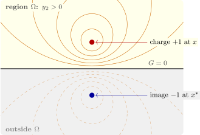

9.3 The method of images
Finding \(\varphi ^x\) means solving a Dirichlet problem, so in general \(G\) is no easier to find than \(u\). For regions with symmetry, though, the corrector is the potential of a fictitious image charge placed outside \(\Omega \) so that its field cancels that of the real charge on the boundary.
The half-space. For \(\Omega = \{y_n > 0\}\), reflect \(x\) to \(x^* = (x_1, \ldots , x_{n - 1}, -x_n)\). Then \(|y - x| = |y - x^*|\) on the plane \(y_n = 0\), so \[ G(x, y) = \Phi (y - x) - \Phi (y - x^*) \] vanishes there, and \(\Phi (\cdot - x^*)\) is harmonic in \(\Omega \). The Poisson kernel is \(-\partial _{\nu }G = \partial _{y_n}G\) at \(y_n = 0\), which gives \[ u(x) = \frac {x_n}{\pi }\int _{-\infty }^\infty \frac {g(t)\,dt}{(x_1 - t)^2 + x_n^2} \quad (n = 2), \qquad u(x) = \frac {x_3}{2\pi }\int _{\mathbb R^2}\frac {g(y)\,dy}{|x - y|^3} \quad (n = 3) \] for the bounded solution of the Dirichlet problem in the half-plane and half-space. Physically, a point charge \(q\) at height \(h\) above a grounded conducting plane induces on the plane a surface charge whose field, above the plane, is exactly that of a charge \(-q\) at depth \(h\) below it (Figure 12). Its density in three dimensions is \(\sigma = -qh/2\pi (r^2 + h^2)^{3/2}\), and its total is \(-q\) (Software 9.4.2).

The ball. For the ball \(|y| < a\), use inversion: the image of \(x \neq 0\) is \(x^* = a^2x/|x|^2\), outside the ball on the same ray. For \(|y| = a\) a short computation gives \(|y - x^*| = (a/|x|)\,|y - x|\), so the corrector is the potential of an image of suitable strength at \(x^*\): \[ G(x, y) = \Phi (y - x) - \Phi \Bigl (\frac {|x|}a\,(y - x^*)\Bigr ) . \] In three dimensions this is \(\frac 1{4\pi }\bigl (|y - x|^{-1} - \frac a{|x|}|y - x^*|^{-1}\bigr )\): an image of strength \(a/|x|\). In the plane it is \(-\frac 1{2\pi }\bigl (\log |y - x| - \log (|x||y - x^*|/a)\bigr )\). Differentiating along the radius on \(|y| = a\) gives the Poisson kernels \[ -\partial _\nu G = \frac {a^2 - |x|^2}{2\pi a|x - y|^2} \quad (n = 2), \qquad -\partial _\nu G = \frac {a^2 - |x|^2}{4\pi a|x - y|^3} \quad (n = 3) , \] the first of which is Poisson’s formula of Section 8, found there by Fourier series. At \(x = 0\) the image recedes to infinity and \(G(0, y) = \Phi (y) - \Phi (a)\).
Images work for the heat equation too. On the half-line \(x > 0\) with \(u(0, t) = 0\), the Green’s function is \(\Phi (x - y, t) - \Phi (x + y, t)\), an odd reflection exactly as for the wave equation in Section 4; with an insulated end, \(u_x(0, t) = 0\), the image has the same sign. Wedges whose angle is \(\pi /m\) need \(2m - 1\) images; other regions need other methods, and in the plane, conformal mapping carries the Green’s function of the disc to any simply connected region (Riemann’s mapping theorem).
Questions on this section
Stuck on something here? Ask below and it stays attached to this topic.